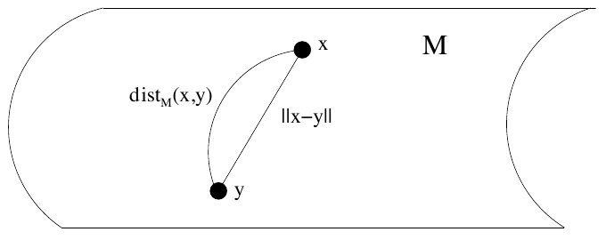
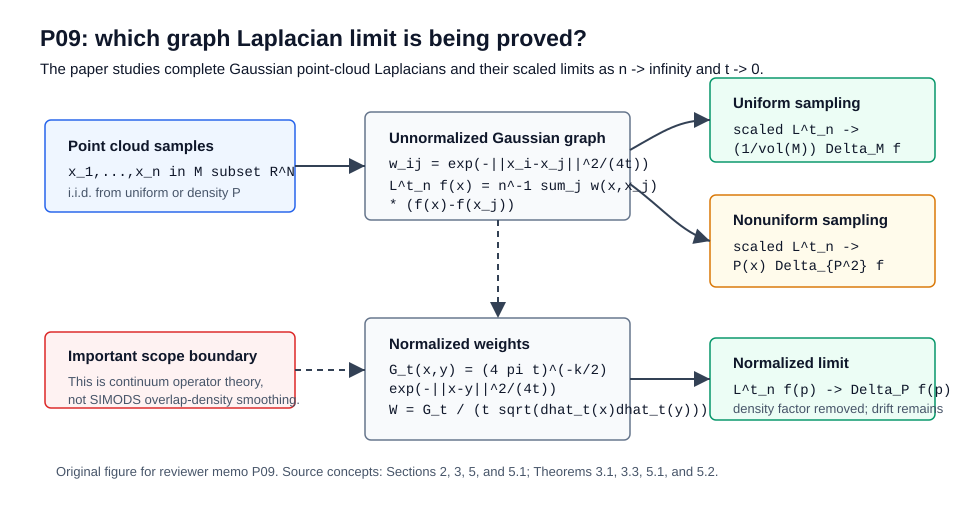

Paper: Belkin, Mikhail, and Partha Niyogi, “Towards a Theoretical
Foundation for Laplacian-Based Manifold Methods,” Journal of Computer
and System Sciences 74(8):1289-1308, 2008; DOI \(10.1016/j.jcss.2007.08.006\). The cached
PDF is an author-hosted preprint dated 23 April 2007. Reviewer:
Reviewer-P09 Auditor: Auditor-P09 Status: revised after audit Date:
2026-05-15 Source manifest ID: P09 Canonical reading copy:
sources/pdf/P09_belkin_niyogi_theoretical_foundation_laplacian_manifold_methods.pdf;
SHA-256
b9e24cc13c6ae9ae7077c415c8ae0e6bbb3b0c6761cc2ae3ed5fd983d571a650;
29 pages; author-hosted PDF from
https://misha.belkin-wang.org/papers/TT_JCSS_08.pdf.
contextual Familiarity with Laplacian Eigenmaps,
diffusion maps, spectral clustering, and manifold regularization helps
place the paper historically, but the paper itself is about operator
convergence rather than a new embedding or classifier.contextual A reader should know that different graph
normalizations target different continuum operators. This is the main
reason P09 matters for conductance/kernel comparisons: unnormalized and
normalized weights can converge to different density-biased or
density-corrected operators.This paper addresses a basic justification problem behind Laplacian-based manifold learning. Many algorithms build a graph on sampled data and then use the graph Laplacian for embedding, clustering, semi-supervised learning, or smoothing. The graph is easy to compute, but the object one hopes to approximate is geometric: the Laplace-Beltrami operator on the unknown manifold from which the data were sampled. P09 proves that, under smooth manifold and bandwidth assumptions, a Gaussian-weighted point-cloud graph Laplacian converges to the relevant continuum differential operator.
The key construction is a complete weighted graph. Every sample point is connected to every other sample point, with weight
\[ \begin{aligned} w_{ij} &= \exp(-\Vert x_{i} - x_{j}\Vert ^2 / (4t)). \end{aligned} \]
Small t makes the graph local. Large n
makes the empirical weighted average approximate an integral over the
manifold. The scaled difference between f(x) and nearby
weighted values behaves like the infinitesimal generator of heat
diffusion, which is the Laplace-Beltrami operator. The mathematical work
is needed because the data provide ambient Euclidean chord distances,
while the manifold operator is intrinsic and depends on geodesic
geometry.
For a nonuniform sampling density, the same unnormalized graph no longer isolates pure geometry. It converges to a density-weighted Laplacian. Section 5 then explains how normalizing by empirical local degrees can remove one density scaling and produce a different weighted Laplacian. This is the central warning for downstream use: “graph Laplacian” is not one object. The continuum limit depends on the weight kernel, the bandwidth, the sampling density, and the normalization.
\(explicit\) The introduction states the problem directly: manifold methods assume data lie on or near a low-dimensional submanifold, but in practice one has only a point cloud and constructs an adjacency graph as a proxy for the manifold; PDF pp. 1-2, Section 1. The paper seeks theoretical support for the intuition that graph-based inference corresponds to geometric inference on the underlying manifold.
\(explicit\) The paper focuses on graph-Laplacian methods used for “semi-supervised learning, clustering, data representation” and asks when the empirical graph Laplacian is related to the data-generating process; Abstract and Section 1, PDF pp. 1-2.
\(explicit\) The main contribution is an operator convergence result: under suitable assumptions, the graph Laplacian of a point cloud converges to the Laplace-Beltrami operator on the underlying manifold. The abstract identifies Theorem 3.1 as the first random graph Laplacian convergence result of this type in the machine-learning context; PDF p. 1.
\(explicit\) The paper grew out of analysis of Laplacian Eigenmaps and extends the COLT 2005 version with fuller uniform-convergence proofs and discussion of arbitrary sampling densities; Section 1.1, PDF pp. 2-3.
\(explicit\) The starting object is
a compact smooth k-dimensional manifold M
isometrically embedded in \(\mathbb{R}^{N}\); Section 2, PDF p. 3. The
embedding induces a Riemannian metric and a canonical volume
measure.
\(explicit\) The paper defines the positive-sign convention Laplace-Beltrami operator by \(\Delta_{M} f = -\operatorname{div}(nabla_{M} f)\), and equivalently through the integration-by-parts identity in Equation (1), PDF p. 4:
\[ \begin{aligned} int_{M} h(x) \Delta_{M} f(x) d\\mu(x) \\ &= int_{M} <nabla_{M} h(x), nabla_{M} f(x)> d\\mu(x). \end{aligned} \]
\(explicit\) Given points \(x_{1},\ldots,x_{n}\), the graph is complete and weighted by a Gaussian of ambient squared chord distance, Section 2, PDF p. 5:
\[ \begin{aligned} w_{ij} &= \exp(-\Vert x_{i} - x_{j}\Vert ^2 / (4t)). \end{aligned} \]
The associated matrix has off-diagonal entries \(-w_{ij}\) and diagonal entries \(sum_{k} w_{ik}\).
\(explicit\) The matrix is extended to a point-cloud Laplace operator on any function, Section 2, PDF p. 5:
\[ \begin{aligned} L_{n}^t f(x) \\ &= (1/n) sum_{j} \exp(-\Vert x - x_{j}\Vert ^2/(4t)) (f(x) - f(x_{j})). \end{aligned} \]
The paper calls this the Laplacian associated with the point cloud.
\(explicit\) The continuous analog
replaces the empirical measure by a measure nu on
M, Section 2, PDF p. 5:
\[ \begin{aligned} L^t f(x) \\ &= f(x) int_{M} \exp(-\Vert x-y\Vert ^2/(4t)) dnu(y) \\ - int_{M} f(y) \exp(-\Vert x-y\Vert ^2/(4t)) dnu(y). \end{aligned} \]
Section 4.2 uses the scaled form
\[ \begin{aligned} L_{t} f(p) \\ &= 1 / (t (4 \pi t)^(k/2)) \\ int_{M} \exp(-\Vert p-x\Vert ^2/(4t)) (f(x) - f(p)) d\\mu(x), \end{aligned} \]
Equation (6), PDF p. 11, up to the paper’s sign convention.
\(explicit\) The proof has two layers, described in Section 3 and Section 4.2. First, the empirical operator converges to the integral operator by law of large numbers and Hoeffding concentration. Second, the scaled integral operator converges to the Laplace-Beltrami operator as \(t \to 0\); see PDF pp. 6 and 11-13.
\(explicit\) The geometric proof reduces the manifold integral to a small ball (Lemma 4.1, PDF p. 13), changes coordinates with the exponential map (Section 4.4, PDF pp. 14-15), uses chordal/geodesic distance agreement to fourth order (Lemma 4.3, PDF pp. 14-15), and analyzes the resulting Gaussian integral in \(\mathbb{R}^{k}\) (Proposition 4.4, PDF pp. 16-17).
\(explicit\) Laplace-Beltrami variational identity, Equation (1), PDF p. 4:
\[ \begin{aligned} int_{M} h \Delta_{M} f d\\mu &= int_{M} <nabla_{M} h, nabla_{M} f> d\\mu. \end{aligned} \]
This is the continuum smoothness operator that graph Laplacians are meant to approximate.
\(explicit\) Weighted Laplacian for a nonuniform measure \(dnu = P d\\mu\), Section 2, PDF p. 4:
\[ \begin{aligned} \Delta_{M,nu} f(x) &= \Delta_{P} f(x) \\ &= (1/P(x)) \operatorname{div}(P(x) nabla_{M} f). \end{aligned} \]
The paper later uses related density-weighted forms \(\Delta_{P^2}\) and \(\Delta_{P}\); see Section 5, PDF pp. 18-23.
\(explicit\) Complete Gaussian graph kernel, Section 2, PDF p. 5:
\[ \begin{aligned} K_{t}(x_{i}, x_{j}) &= \exp(-\Vert x_{i} - x_{j}\Vert ^2 / (4t)). \end{aligned} \]
This is not a compact-support, epsilon-neighborhood, kNN, self-tuned, or conductance-from-length kernel. It is a full graph with rapidly decaying weights.
\(explicit\) Point-cloud Laplacian, Section 2, PDF p. 5:
\[ \begin{aligned} L_{n}^t f(x) &= (1/n) sum_{j} K_{t}(x, x_{j}) (f(x) - f(x_{j})). \end{aligned} \]
On sample vertices this is the matrix graph Laplacian divided by
n.
\(explicit\) Main uniform-density limit, Theorem 3.1, PDF p. 6:
\[ \begin{aligned} t_{n} &= n^(-1/(k+2+\alpha)), \alpha > 0 \\ 1 / (t_{n} (4 \pi t_{n})^(k/2)) L_{n}^{t_{n}} f(x) \\ \to (1/vol(M)) \Delta_{M} f(x) \end{aligned} \]
The convergence is in probability for a fixed smooth f
and point x.
\(explicit\) Uniform-over-functions theorem, Theorem 3.2, PDF pp. 6-7, and Theorem 6.3, PDF p. 26: for an equicontinuous function class with uniform derivative bounds up to order 3, there exists \(t_{n} \to 0\) such that the scaled empirical operator converges uniformly over the class to \((1/vol(M)) \Delta_{M}\).
\(explicit\) Nonuniform-density unnormalized limit, Theorem 3.3, PDF p. 7, and Theorem 5.1, PDF p. 19:
\[ \begin{gathered} scaled L_{n}^{t_{n}} f(x) \to P(x) \Delta_{P^2} f(x) \end{gathered} \]
Theorem 3.3 includes a vol(M) factor under its measure
convention; Theorem 5.1 states the same density-biased phenomenon under
the Section 5 convention.
\(explicit\) Normalized weights, Section 5.1, PDF p. 20:
\[ \begin{aligned} G_{t}(x, y) &= (4 \pi t)^(-k/2) \exp(-\Vert x-y\Vert ^2/(4t)) \\ W(x, x_{i}) &= (1/t) G_{t}(x, x_{i}) \\ / \sqrt(dhat_{t}(x) dhat_{t}(x_{i})). \end{aligned} \]
Here \(d_{t}(x) = int_{M} G_{t}(x,y) P(y) vol(y)\), and \(dhat_{t}\) is its empirical estimate from the point cloud.
\(explicit\) Normalized limiting continuous operator, Section 5.1.1, PDF p. 20:
\[ \begin{aligned} L_{t}^P f(x) \\ &= (1/t) int_{M} G_{t}(x,y) / \sqrt(d_{t}(x)d_{t}(y)) \\ (f(x)-f(y)) P(y) vol(y). \end{aligned} \]
\(explicit\) Normalized nonuniform
limit, Theorem 5.2, PDF p. 23: if M is compact without
boundary, P is bounded above and below away from zero, and
P is twice differentiable, then for some sequence \(t_{n}\), the normalized empirical Laplacian
converges in probability to \(\Delta_{P}
f(p)\).
\(explicit\) Chordal/geodesic approximation, Lemma 4.3, PDF pp. 14-15:
\[ \begin{aligned} \Vert x\Vert ^2_Rk - \Vert y-p\Vert ^2_RN &= g(x), with |g(x)| = O(\Vert x\Vert ^4). \end{aligned} \]
This is the reason an ambient Gaussian kernel can approximate an intrinsic heat-kernel operator to the order needed for the Laplacian limit.
\(explicit\) Figure 1, PDF p. 10, is the only figure in the paper. It contrasts geodesic distance along the manifold with ambient chord distance. Its role is not empirical; it supports the proof intuition behind Lemma 4.3 by showing why \(dist_{M}(x,y)\) and \(\Vert x-y\Vert\) are close locally but conceptually different.

\(explicit\) The paper contains no experimental section, algorithms, result tables, or numerical comparisons. It is a theory paper about operator convergence. The examples and cited applications are contextual rather than empirically evaluated in this PDF.
\(explicit\) The paper has no tables in the canonical PDF.
contextual For the H005 review, Figure 1 is useful
mainly as a reminder that the Gaussian weights use ambient chord
distance while the limit operator is intrinsic. It is not a conductance,
kernel-response, eigenvector, clustering, or smoothing result
figure.
\(explicit\) Theorem 3.1, PDF p. 6, gives pointwise convergence in probability of the scaled Gaussian point-cloud Laplacian to \((1/\operatorname{vol}(M))\Delta_M f(x)\) under uniform sampling from a compact embedded manifold, \(f \in C^\infty(M)\), and \(t_n=n^{-1/(k+2+\alpha)}\).
\(explicit\) Theorem 3.2, PDF pp. 6-7, extends the uniform-density result to a function class with uniform derivative bounds up to order 3; the proof is completed as Theorem 6.3 in Section 6, PDF p. 26.
\(explicit\) Theorem 3.3, PDF p. 7,
states that under arbitrary positive sampling density P,
the same unnormalized graph Laplacian converges to a density-scaled
weighted Laplacian rather than to the pure Laplace-Beltrami
operator.
\(explicit\) Theorem 5.1, PDF p. 19, develops the nonuniform-density result in Section 5 and identifies the limiting operator as \(P(x) \Delta_{P^2} f(x)\) under the Section 5 scaling convention.
\(explicit\) Section 5.1, PDF
pp. 19-23, shows how normalizing weights by empirical local degree
estimates changes the target operator. Theorem 5.2, PDF p. 23, proves
convergence in probability to \(\Delta_{P}
f(p)\) under bounded positive twice differentiable
P.
\(explicit\) Proposition 4.4, PDF pp. 16-17, is the core analytic step: after reducing the manifold integral to a local Euclidean Gaussian integral, the leading Taylor/Hessian term becomes \((1/vol(M)) \Delta_{M} f(p)\) while curvature and chordal-distance error terms vanish.
\(explicit\) Lemma 4.1, PDF p. 13,
proves the Gaussian integral outside any open ball around p
is exponentially negligible. This justifies localizing the manifold
analysis.
\(explicit\) Lemma 4.2, PDF p. 14,
states that in exponential coordinates at p, \(\Delta_{M} f(p)\) equals the Euclidean
Laplacian of the coordinate representation at the origin.
\(explicit\) Lemma 4.3, PDF pp. 14-15, proves the fourth-order relationship between squared geodesic and chordal distances. This is a critical assumption bridge from observable ambient distances to intrinsic manifold geometry.
\(explicit\) Proposition 6.1, PDF pp. 23-24, gives uniform empirical convergence over an equicontinuous precompact function class by Arzela-Ascoli plus a finite-net/union-bound argument.
\(explicit\) Proposition 6.2, PDF pp. 24-25, gives uniform convergence of the continuous Gaussian operator to the Laplace-Beltrami operator over function classes with uniform derivative bounds up to order 3.
contextual The paper proves convergence of operators
applied to smooth functions, not convergence of graph eigenvectors,
eigenvalues, embeddings, classifiers, or graph-regularized estimators.
Those spectral/algorithmic consequences require additional perturbation
and statistical arguments.
\(explicit\) The primary theorem assumes a compact smooth embedded manifold and uniform sampling; Theorem 3.1, PDF p. 6. Boundary effects are not central in the main result, and Theorem 5.2 explicitly assumes a compact manifold without boundary, PDF p. 23.
\(explicit\) The test function in Theorem 3.1 is smooth (\(C^\infty\)), and uniform convergence requires bounded derivatives up to order 3; Theorems 3.1, 3.2, and 6.3, PDF pp. 6-7 and 26. This is not a result for arbitrary noisy graph signals.
\(explicit\) The graph is complete with Gaussian weights; Section 2, PDF p. 5. The paper does not prove the same theorem for sparse kNN graphs, mutual kNN graphs, epsilon graphs, conductance graphs, or self-tuned local bandwidths.
\(explicit\) The bandwidth sequence is theoretical. Theorem 3.1 fixes \(t_{n} = n^(-1/(k+2+\alpha))\); normalized Theorem 5.2 states existence of a sequence \(t_{n}\) rather than a practical rule; PDF pp. 6 and 23.
\(explicit\) For nonuniform sampling, the unnormalized Laplacian is density biased. Theorems 3.3 and 5.1 show convergence to \(P(x) \Delta_{P^2}\), not directly to \(\Delta_{M}\); PDF pp. 7 and 19.
\(explicit\) Normalization removes a scaling factor but still yields a weighted Laplacian \(\Delta_{P}\), not automatically the pure geometry operator. Section 5.1 says a different normalization can recover the Laplace-Beltrami operator, but this PDF outlines only the normalized-weight convergence to \(\Delta_{P}\); PDF pp. 19-23.
\(explicit\) The paper does not present finite-sample constants usable for tuning in an applied pipeline. Hoeffding bounds are used to prove convergence in probability, but the results are asymptotic and proof-oriented; Section 4.2 and Section 5.1.1, PDF pp. 12-13 and 20-21.
contextual The paper assumes noiseless samples on the
manifold. It does not address off-manifold noise, finite-thickness data
clouds, sample-dependent metric learning, graph disconnection, numerical
conditioning of eigenvectors, or out-of-sample extension.
derived Because the proof relies on local Taylor
expansions, compactness, smooth positive density, and a shrinking
Gaussian scale, it should not be used as direct evidence that an
arbitrary empirical graph smoother has a Laplace-Beltrami
interpretation. It supports carefully matched kernel, bandwidth,
density, and normalization choices.
\(explicit\) The abstract and Section 1 claim the paper helps close the gap between “manifold-motivated” algorithms and explicit theoretical guarantees; PDF pp. 1-2.
\(explicit\) The paper is tied historically to Laplacian Eigenmaps and the COLT 2005 result, with later related developments by Lafon/Coifman, Hein/Audibert/von Luxburg, Singer, and others listed in Section 1.1; PDF pp. 2-3.
contextual For the H005 conductance/kernel-laplacian
review, P09 supplies the clean conceptual bridge: a Gaussian edge kernel
plus graph Laplacian can be understood as a finite-sample approximation
to a continuum diffusion/Laplace operator, but only after specifying
sampling, scaling, and normalization.
contextual P09 complements P08. P08 is more directly
about graph Laplacian convergence varieties and consistency issues; P09
is the compact proof narrative that explains why the
Gaussian/chordal-distance construction approximates the intrinsic
operator in the first place.
\(explicit\) Complete Gaussian affinity, Section 2, PDF p. 5:
\[ \begin{aligned} w_{ij} &= \exp(-\Vert x_{i} - x_{j}\Vert ^2 / (4t)). \end{aligned} \]
This is the paper’s core graph weight. It is a radial kernel on
ambient Euclidean chord distance with bandwidth parameter t
and exponent denominator 4t.
\(explicit\) Gaussian heat kernel normalization used for normalized weights, Section 5.1, PDF p. 20:
\[ \begin{aligned} G_{t}(x, y) &= (4 \pi t)^(-k/2) \exp(-\Vert x-y\Vert ^2/(4t)). \end{aligned} \]
\(explicit\) Degree/density estimate, Section 5.1, PDF p. 20:
\[ \begin{aligned} d_{t}(x) &= int_{M} G_{t}(x,y) P(y) vol(y) \\ dhat_{t}(x_{i}) &= (1/(n-1)) sum_{j != i} G_{t}(x_{i},x_{j}) \end{aligned} \]
\(explicit\) Normalized affinity/operator weight, Section 5.1, PDF p. 20:
\[ \begin{aligned} W(x, x_{i}) &= (1/t) G_{t}(x, x_{i}) \\ / \sqrt(dhat_{t}(x) dhat_{t}(x_{i})). \end{aligned} \]
derived The effective conductance for a graph-smoothing
energy would be proportional to \(w_{ij}\) or to the normalized \(W(x_{i},x_{j})\), depending on whether the
graph uses the unnormalized or degree-normalized construction. P09 does
not frame these weights as electrical conductances, but graph Laplacian
off-diagonal weights play that mathematical role.
contextual The paper’s kernel is global-support
Gaussian. Any H005 “length/kernel-conductance” comparator using finite
graph lengths, local neighborhoods, or self-tuned scales should be
presented as a planned comparator inspired by this class of theory, not
as the exact P09 construction.
\(explicit\) Matrix graph Laplacian, Section 2, PDF p. 5:
\[ \begin{aligned} (L_{n}^t)_{ij} &= -w_{ij} for i != j \\ (L_{n}^t)_{ii} &= sum_{k} w_{ik} \end{aligned} \]
\(explicit\) Function-valued point-cloud Laplacian, Section 2, PDF p. 5:
\[ \begin{aligned} L_{n}^t f(x) &= (1/n) sum_{j} w_{t}(x,x_{j}) (f(x) - f(x_{j})). \end{aligned} \]
\(explicit\) Functional approximation, Section 2 and Equation (6), PDF pp. 5 and 11:
\[ \begin{aligned} L^t f(x) &= int_{M} w_{t}(x,y) (f(x) - f(y)) dnu(y) \end{aligned} \]
with a scale factor \(1/(t(4 \pi t)^(k/2))\) when taking the Laplace limit.
\(explicit\) Heat diffusion connection, Section 3.1, PDF pp. 7-9: the Euclidean heat operator is Gaussian convolution, and Equation (5), PDF p. 8, expresses the Laplacian as the small-time derivative of the heat flow:
\[ \begin{aligned} \Delta f(x) &= lim_{t \to 0} (1/t) (f(x) - H_{t} f(x)). \end{aligned} \]
derived In graph-signal terms, the graph operator is a
local averaging residual. Low values mean f is close to its
kernel-weighted local average; large values mark high local curvature or
high graph-frequency variation.
\(explicit\) The paper’s task is theoretical operator approximation: prove convergence from a point-cloud graph Laplacian to a manifold differential operator. It is motivated by semi-supervised learning, clustering, and data representation, but it does not implement one of those tasks; Abstract and Section 1, PDF pp. 1-2.
contextual The closest task categories for H005 are
graph signal smoothing and graph/manifold regularization, because the
same weights enter penalties like \(sum_{ij}
w_{ij} (f_{i}-f_{j})^2\) and low-frequency Laplacian bases.
\(explicit\) The authors say most manifold algorithms are “manifold-motivated” and lack explicit theoretical guarantees; Abstract, PDF p. 1.
\(explicit\) They argue graph-theoretic techniques are justifiable only when related to the underlying data-generating process; Section 1, PDF p. 2.
\(explicit\) They state their main step toward a theoretical foundation: under conditions, the graph Laplacian is directly related to and converges to the Laplace-Beltrami operator; Section 1, PDF p. 2.
\(explicit\) They emphasize that the graph is an empirical object constructed from sampled data; Section 1, PDF p. 2. This is exactly the reason the proof combines probability and differential geometry.
\(explicit\) They motivate arbitrary-density analysis because practical samples need not be uniform on the manifold; Section 3, PDF p. 7, and Section 5, PDF p. 18.
\(explicit\) They motivate normalized weights because the unnormalized operator under nonuniform sampling is multiplied by the density; Section 5.1, PDF p. 19.
derived The paper implicitly motivates
kernel-conductance design by showing that the choice of edge weight is
not merely numerical: it selects the continuum differential operator
being approximated.
derived The paper motivates density correction when the
sampling density is a nuisance rather than the target geometry. Theorem
3.3 and Section 5.1 show that unnormalized graphs mix geometry and
sampling density.
derived The proof motivates using ambient distances only
at sufficiently local scales. Lemma 4.3 makes chordal distance safe
asymptotically because local chordal and geodesic squared distances
differ only at fourth order.
derived The paper motivates treating bandwidth as part
of the statistical model. The limit needs both \(n \to infinity\) and \(t \to 0\); fixed or poorly scaled
bandwidths are different regimes.
\(explicit\) Section 2, PDF p. 4, notes that eigenfunctions of the Laplace-Beltrami operator form a basis for \(L^2(M)\) and gives the circle/Fourier harmonics example. This is the continuum spectral foundation behind Laplacian Eigenmaps and graph spectral smoothing.
\(explicit\) Section 3.1, PDF pp. 7-9, ties the Laplacian to heat diffusion: the heat operator smooths a function by Gaussian averaging, and the Laplacian is the infinitesimal generator of that smoothing.
contextual If graph Laplacian operators converge to
continuum Laplacians, then low graph frequencies can be interpreted as
discrete approximations to smooth manifold modes. P09 does not itself
prove eigenvector convergence, so this interpretation should be treated
as contextual.
derived In smoothing language, \(L_{n}^t f\) measures how much a value
differs from its local Gaussian average. Penalizing \(f^T L f\) suppresses local variation across
high-weight edges, which approximates intrinsic smoothness only under
compatible sampling, bandwidth, and normalization.
\(explicit\) P09 does not propose
adaptive or self-tuned bandwidths. The main kernel has a single global
bandwidth t; Section 2, PDF p. 5.
\(explicit\) The normalization in
Section 5.1 is degree/density normalization, not local bandwidth
adaptation. It uses \(dhat_{t}(x)\)
estimates with the same global t; PDF p. 20.
contextual P09 is foundational for later adaptive-scale
work because it shows what a clean global Gaussian limit looks like.
Adaptive-scale comparators should cite P09 as baseline theory and use
P04/P10-style sources for variable-bandwidth or kNN self-tuned
guarantees.
derived For SIMODS planned length/kernel-conductance
comparators, P09 supports the idea that a kernel of local distance can
define a meaningful Laplacian smoother. It does not by itself determine
the right local scale, neighbor truncation, or density correction for
SIMODS data.
\(explicit\) It does not claim convergence for Laplacian eigenvectors or eigenvalues. The related non-geometric spectral convergence work is mentioned in Section 1.1, PDF p. 3, but P09’s theorems are operator-on-function convergence statements.
\(explicit\) It does not present a new semi-supervised learning algorithm, classifier, clustering algorithm, or embedding method. It provides theory for a class of Laplacian-based methods; Abstract and Section 1, PDF pp. 1-2.
\(explicit\) It does not analyze sparse kNN/self-tuned graphs. The graph in Section 2 is complete with Gaussian weights; PDF p. 5.
\(explicit\) It does not solve practical bandwidth selection. The theorem gives asymptotic scaling or existence of a sequence; Theorems 3.1 and 5.2, PDF pp. 6 and 23.
\(explicit\) It does not prove that unnormalized graphs recover pure geometry under nonuniform sampling. In fact, Theorems 3.3 and 5.1 show density-weighted limits; PDF pp. 7 and 19.
derived It does not validate current
fit.rdgraph.regression() overlap-density smoothing
semantics as a Laplace-Beltrami-consistent method. Any such claim would
require matching the actual SIMODS weights, graph construction,
normalization, and data-generating assumptions to the P09
hypotheses.
contextual P09 is useful for SIMODS as baseline theory
for graph Laplacian smoothing based on kernel weights. If planned
length/kernel-conductance comparators use edge conductances of the form
\(\exp(-length^2/(4t))\) or a
normalized heat-kernel analog, P09 supplies the continuum-operator
interpretation to test against.
derived P09 suggests that a SIMODS kernel-conductance
smoother should document four choices explicitly: the distance used in
the kernel, the bandwidth schedule or selection rule, the
sampling-density/degree normalization, and the target continuum operator
or practical surrogate.
derived P09 warns that density is not an implementation
detail. If SIMODS neighborhoods have variable sample density,
unnormalized weights may smooth according to both geometry and density.
Normalization may be needed if the desired comparator is geometric
rather than density-aware.
contextual Current gflow overlap-density smoothing
should remain distinct from planned length/kernel-conductance
comparators. P09 studies Gaussian distance kernels and graph Laplacian
limits, not overlap-density weights. It can help frame future
comparators but should not be cited as evidence that the current
overlap-density smoother has the same continuum limit.
derived For H005, the paper supports adding a “density
sensitivity” diagnostic to comparator interpretation: if a method
changes materially under degree normalization, the difference may
reflect the operator distinction highlighted in Theorems 3.3, 5.1, and
5.2.
contextual Because the paper is asymptotic and assumes
smooth manifolds, its role in SIMODS should be theoretical framing and
comparator design, not a guarantee of finite-sample performance.
Reproduced cropped figure panel for Figure 1 is managed by
paper_figure_screenshots.yml and embedded in the generated
HTML memo next to the primary figure description. This is an
internal-review cropped figure panel from the canonical reading copy,
not a manuscript-ready reused figure.
literature/conductance_kernel_laplacian_review/figures/P09_operator_limit_map.svg
| Claim | Label | Source reference | Notes |
|---|---|---|---|
| The paper aims to justify Laplacian-based manifold methods by proving graph Laplacian convergence to manifold differential operators. | explicit | Abstract and Section 1, PDF pp. 1-2 | Central paper claim. |
| The graph is complete and uses Gaussian weights \(\exp(-\Vert x_{i}-x_{j}\Vert ^2/(4t))\). | explicit | Section 2, PDF p. 5 | Not kNN, not self-tuned. |
The point-cloud operator divides the graph Laplacian action by
n and extends it to arbitrary x. |
explicit | Section 2, PDF p. 5 | Important for scaling. |
| Under uniform sampling, the scaled point-cloud Laplacian converges in probability to \((1/vol(M)) \Delta_{M} f\). | explicit | Theorem 3.1, PDF p. 6 | Fixed smooth function and fixed point. |
| Uniform convergence over a smooth bounded function class is proved. | explicit | Theorem 3.2, PDF pp. 6-7; Theorem 6.3, PDF p. 26 | Uses derivative bounds and equicontinuity. |
| Ambient chord distance is asymptotically good enough for intrinsic geometry because squared-distance error is fourth order. | explicit | Lemma 4.3, PDF pp. 14-15 | Core geometric bridge. |
| For nonuniform sampling, the unnormalized graph Laplacian converges to a density-weighted Laplacian, not pure \(\Delta_{M}\). | explicit | Theorem 3.3, PDF p. 7; Theorem 5.1, PDF p. 19 | Key density-bias warning. |
| Degree-normalized weights change the limit to \(\Delta_{P}\) under smooth positive density assumptions. | explicit | Section 5.1 and Theorem 5.2, PDF pp. 19-23 | Normalization removes a density multiplier but does not necessarily produce pure geometry. |
| The paper proves operator convergence, not eigenvector/eigenvalue convergence. | explicit | Theorems 3.1, 3.2, 3.3, 5.1, 5.2; Section 1.1, PDF p. 3 | Spectral convergence is discussed as related work, not the result. |
| Figure 1 is the only figure and explains geodesic versus chordal distance. | explicit | Figure 1, PDF p. 10 | Internal-review cropped figure panel embedded in generated HTML. |
| P09 is relevant to SIMODS planned length/kernel-conductance comparators. | derived | Section 2 weights plus Theorems 3.1, 3.3, 5.2 | Applicability depends on matching graph construction and normalization. |
| P09 validates current gflow overlap-density smoothing. | uncertain | Not claimed in PDF | Keep separate from planned kernel-conductance comparators. |
Auditor-P09 requested an explicit sign-convention note around Eq. (6). The final synthesis should state the paper’s Laplacian sign convention before comparing Eq. (6) to graph-smoothing or heat-semigroup conventions.
Resolve the density-scaling convention carefully: Theorem 3.3 and Theorem 5.1 use different normalization contexts involving \(\mathrm{vol}(M)\). Do not collapse them into one density formula without preserving the theorem setting.
Coifman-Lafon \(\alpha\) normalization should be treated as a contextual cross-reference here; detailed \(\alpha\)-normalization claims should be sourced to P03/P04.
The SVG explanatory figure is fine for internal review. If used
in the pdflatex final report, render it to PDF or PNG
first.
2026-05-15: Reviewer-P09 created the memo from the canonical 29-page PDF, inspected Figure 1 visually, and added one original explanatory SVG figure.